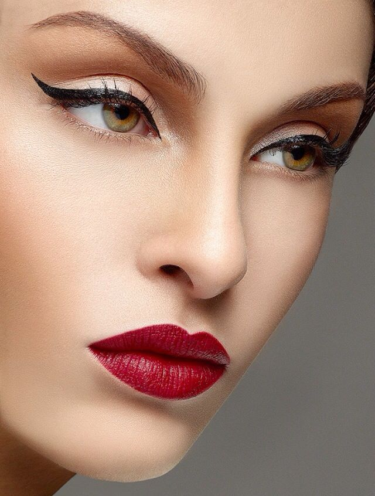

Retro
Если вы создаете лук в стиле ретро, то вам понравится и соответствующий стильный макияж.
Для такого мэйка характерны яркие акценты. Это могут быть четкие стрелки, необычные цветные тени на глазах или же красивые алые губы.
Красивая помада – это самый простой способ акцентировать внимание на привлекательных чертах своей внешности.
Чем насыщеннее ваша собственная внешность, тем более броским должен быт макияж. То же касается и глаз. Не стоит
ограничиваться классическим черным лайнером. Вы можете выполнить стрелки в синем или фиолетовом цвете, например.
Это будет смотреться очень эффектно.

Популярный ретро-макияж можно выполнить, подражая стилю Твигги. Если вам нравится эта
худощавая девушка с ее особым и уникальным стилем, то вы можете повторить его. Чтобы выглядеть, как известная птичка,
вам нужно будет сделать тон кожи ровным и слегка высветлить его. Ресницы нужно подчеркнуть несколькими движениями кисточки туши.
Яркий акцент нужно сделать на губах..
{% endblock %}